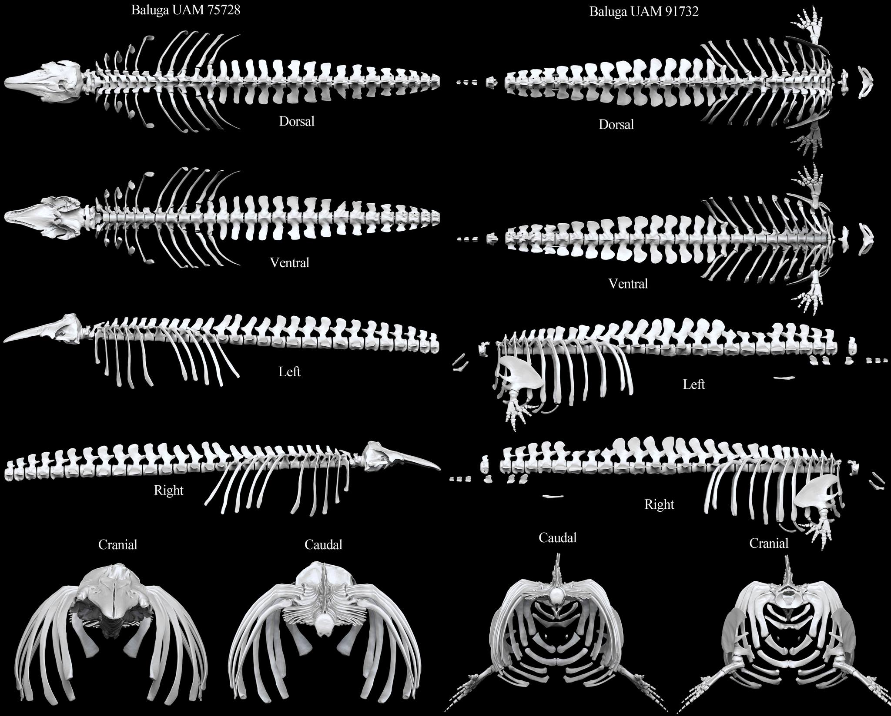
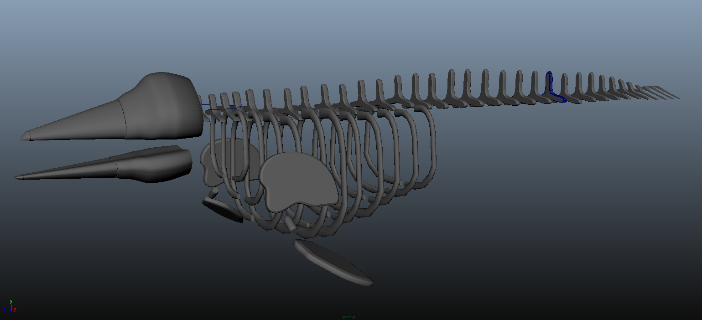
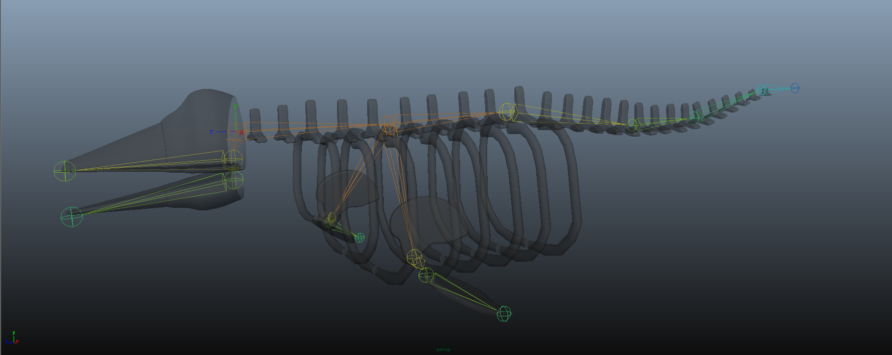
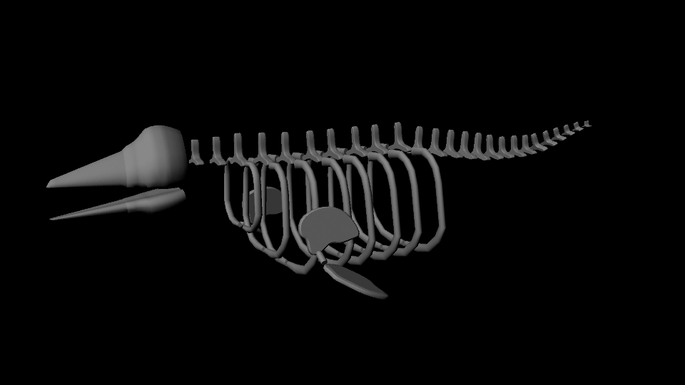
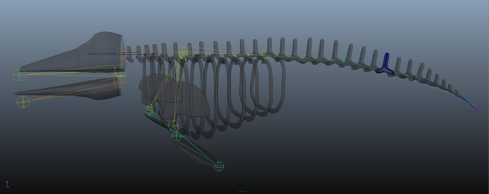
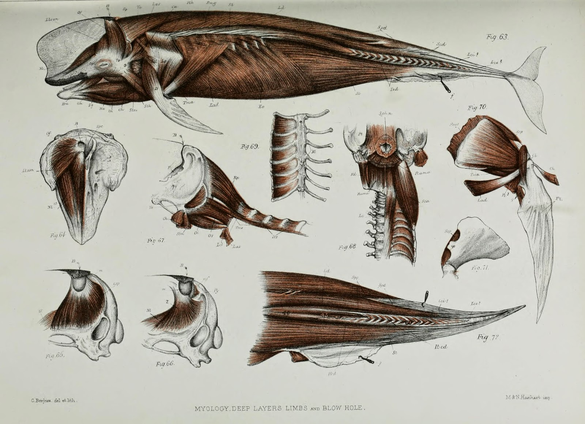
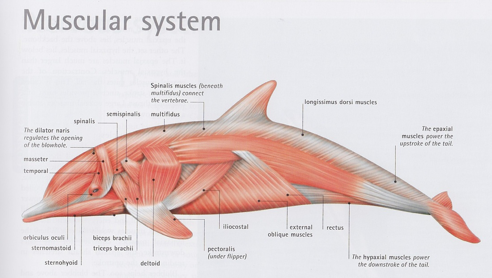
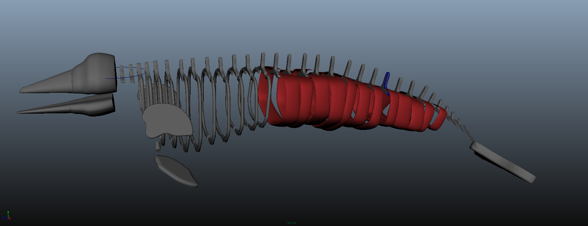

Beluga Tissue System
Modeling, Rigging, Animation Scripting, and Muscle Collision Handling in Maya
On one of the last days of the Computer Graphics class I was taking during the Summer 2015 semester, we watched this video of Weta Digital's tissue modeling system, as demonstrated on a running horse. Since making the decision to switch my focus to Computer Science, I had been looking for a way to tie in my passion for and experience with animal physiology. After seeing that video, the biologist/wanna-be-veterinarian in me was freaking out, and I knew I had to learn more.
Under the guidance of the Georgia Tech Graphics Lab, I structured my Senior Research Project for my Computer Science degree around implementing a tissue modeling system as described by Weta Digital and using this system to program and optimize biologically accurate swimming patterns for my animal of choice, the beluga whale. This was my first experience with Maya, and it was an incredible learning experience on all fronts.
Over the course of a semester, I ended up breaking up this project into four mini-projects: Skeleton Modeling, Keyframe Animation, Scripted Animation, and Muscle Modeling. But before any of that, I had to find references for what my little whale was actually going to look like.
Reference Search
Fun fact, there isn't much information about beluga skeletons and muscluature. But I used what I could find and guesstimated the rest from the comparative wealth of information on dolphins I found.
 Two incomplele beluga skeletons digitized by the Idaho Virtualization Laboratory.{kind=link}
Skeleton Modeling
From there, I created a simplified model of a skeleton out of polygon shapes in Maya. This was my first attempt at using the software, and holy wow is it powerful. I didn't realize how much it could do at first and was getting confused why my shapes weren't lofting correctly or just generally not doing what I wanted them to do, but after a lot of watching tutorials I got the hang of it. Coming from a biology background, it was hard for me to resist making the models actually scientifically realistic, but I knew I had to keep moving forward with the other tissue layers.
 Beluga skeletal model with simplified flippers, skull, and vertebrae.{kind=link}
Keyframe Animation
After modeling, I moved onto rigging and animating my beluga. My first approach at animation was manually setting keyframes, and I built the rig with this type of animation in mind. I knew I wanted separate joints for the skull, jaw, neck, flippers, and tail, but to decide how many joints to use down the length of the spine to give realistic bending motions, I used reference video of actual belugas swimming. I was looking for a clip of a beluga swimming horizontally, not diving, not covered by a calf or other adult, not just gliding, and from the left or right side views. I finally decided on using a two stroke sequence from this video as my swimming stroke template. From there, I saved off the frames of the adult swimming, traced the spine in each scene, and used this line to determine how many joints to use down the spine and where they should be located in relation to the vertebrae.

And then rigging! From the spine drawings, I broke the spine down into six rig segments and skinned the skeleton models to the joints using linear, closest distance binding. I restricted the spine joints to only a single degree of freedom in the X direction to simplify the animation. From there, I set keyframes for each spine joint every 10 frames at angles I approximated from the spine drawings and looped the animation. The result is shown below.
 Rigging based on video of swimming beluga.  Keyframed animation of joints based on angles estimated from swimming footage.{kind=link}
{kind=link}
Scripted Animation
While this result was based on scientific data, I was looking for a more procedural, reproducable approach. I looked up animation script editing and implemented a controller ojbect with a script with parameters for amplitude, offset, phase, and shift that used sine wave caluclations to control the rotation of each joint at each frame. This allowed me to quickly edit the swimming pattern and see the results of my changes without having to set the rotation for each joint manually. The following video shows some of the flexibility of this procedural scripted approach.
 Updated skeleton and rig.{kind=link}
 Scripted animation allowed for more control over swimming pattern styles.
Scripted animation allowed for more control over swimming pattern styles.
Muscle Modeling
The current step in this ongoing project is adding in the muscle layer to the beluga model. This step has been the least straightforward, most challenging, but also most fun as I have had to make many decisions on the style of modeling and approach to best execute this style. I started by researching whale and dolphin musculature and found these two general references to use.
 Scientific drawings of caaing whale muscules from the Zoological Society of London.  Artistic representation of dolphin muscluature.{kind=link}
{kind=link}
I experimented some with multiobject collision handling and keep out node heirarchies in an effort to make the muscle scientifically realistic, but I ultimately decided on a more stylized approach. The muscles are attached to points on the surfaces of the skeleton models, and the muscles move with the model as it swims.
 In-progress muscle modeling.{kind=link}
I am currently continuing to work on implementing this muscle layer on the beluga model. I am generally working from the tail towards the head and will possibly have to do some slight modifications to the flipper and skull skeletal models depending on how the muscles will best attach. After the muscle modeling, my next steps will be including a fat layer, skin mesh, and some sort of overall whale-like texture. Eventually I am interested in seeing how a model similar to this would work in a particle system where its motion would actually be affected by its interactions with the particles around it. But overall, this project has been incredibly rewarding. I learned so much about the functionality of Maya just by trying new things, and I gained a much better appreciation for the workflow of creature modeling and animation. This has definitely inspired me to continue experimenting with animation, and I am excited to continue learning!
References
Beluga Skeleton: Idaho Virtualization Laboratory
Beluga Swimming Video: National Geographic
Caaing Whale Musculature: Zoological Society of London